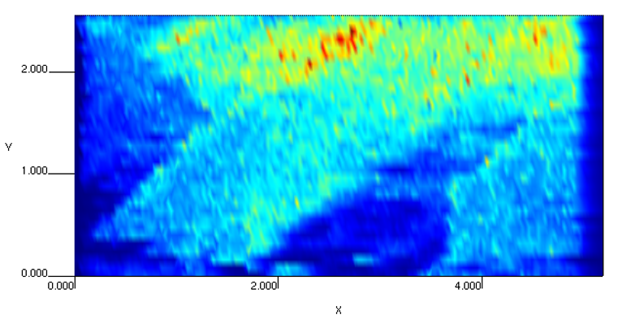

The Analysis Viewer panel consists of a 2D/3D representation of the current element with a menu bar and a right sidebar with several configuration options.
In the following figure, the ion intensity profile of 23Na+ in a section of penile cancer tissue is shown. To obtain two-dimensional imaging of element distribution, the region of interest was systematically screened (line by line). The spot size of laser was 65 µm. The highest values of 23Na+ are presented in red and the lowest in blue. The change in ion intensity demonstrates an inhomogeneous element distribution in the line scan measured. The SLC8A1/NCX1 gene expression is associated with the sodium distribution in penile cancer [1], which is compatible with the function of this gene. Thus, an increased sodium distribution is presented in the top of the tissue, which corroborates with healthy status of the donor and to histopathological evaluation.

Element 2D representation.
The menu bar contains the following sub-menus: